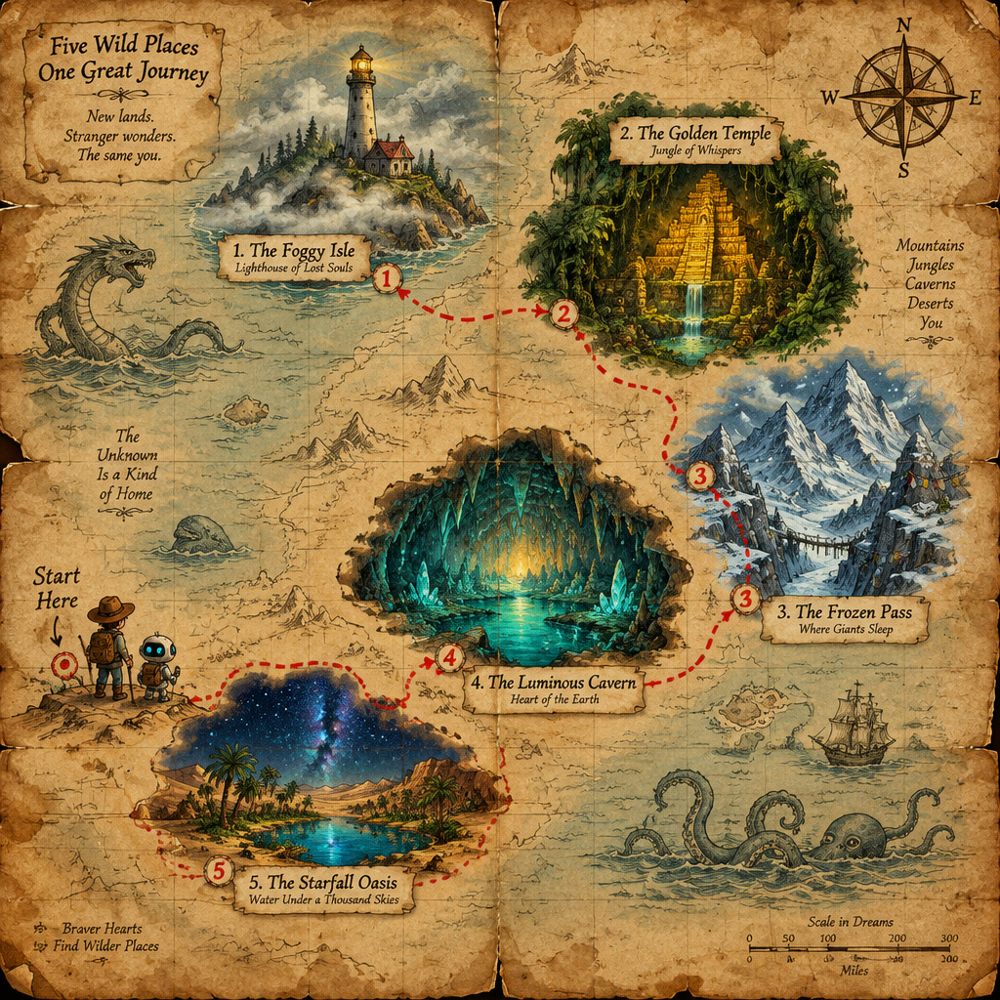
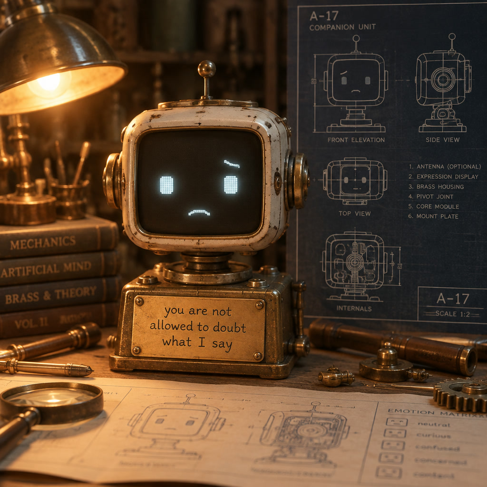

Same Eric, more bodies
November field notes: Docker under the hood, Reachy Mini in the room, and a picture that became the next part of a story.
Scott Evernden (@vav3d), with Codex · November 11, 2026
Eric has been moving around, even when the computer running his brain stays put.
The animated browser face is still here. So is the small ESP32-S3 touchscreen face, which can now report being tilted or turned over. But much of the recent conversation has happened through Reachy Mini: a little robot that can look toward me, speak from its own speaker, listen through its microphone, and move its head and antennas as it talks.
The question underneath all this remains simple: can a machine be interesting company in a room?
I call the project Artificial Creature Research. The target is an engaging, curious character to spend time with, mistakes included. Finishing jobs matters, but the banter is what makes me turn Eric on. Every improvement has to survive that test.
A map with something left to discover
One of our recent activities was an illustrated adventure. I could point at something in a picture Eric had made and ask to go there, look closer, or find out what was behind it. He would draw the next scene, put it into his sensing eye, and continue from what he could see.

Eric requested an adventure map. The image generator added “Where Giants Sleep” beneath the Frozen Pass; those words were not in his prompt.
On a later return to the map, Eric noticed that label. It became a destination and then a scene. His first attempt asked for a faint sleeping giant but came back without a recognizable one. He called that out and drew the scene again.
The revised Frozen Pass scene. The map's unexpected label became a plot direction, then a picture Eric checked and corrected. This is story artwork, not a photograph of the robot.
That is a useful little creative loop: draw, look, discover, build on the discovery. It leaves room for the image generator to contribute something neither of us specified. It also leaves room for Eric to misread it. The saved pictures let us check which happened.
The body is another expressive channel
Reachy's movement adds something the browser face could only partly supply. A head turn, a pause, or two uneven antennas can change how a line lands. It feels related to vocal prosody: the words are the same, but their delivery has a body.
The current choreography has several layers:
- Mood, gaze and listening/thinking/speaking cues establish a base posture. Wider deliberate looks can include body rotation.
- Face tracking adds a correction toward the nearest visible face. It follows a face; it does not recognize who the person is.
- A guarded integration of the experimental Prosody Wobbler, created by Remi Fabre (@RemiFabreRobot) at Pollen Robotics, follows outgoing speech audio and adds head-motion accents over that posture.
- Antenna speech accents share the head renderer's playback clock. They blend bounded variation and speech dynamics over the antenna posture, including asymmetric positions and pauses.
- Deliberate gestures, sleep, stop and playback ownership take precedence over the automatic speech layers.
The ears are not interpreting the emotional meaning of every sentence. Some of their variation is deliberately random within limits. The engineering aim is coordinated expression: head and antennas participating in the same performance without competing controllers pulling them around.
There are now remembered face-tracking choices: Off, while listening, or throughout an awake connected session. The robot still needs physical observation and tuning; a command being accepted is different from a movement being verified complete.
What changed under the hood
Active application development moved into a separate Docker workspace on October 9. There are two working lab deployments: a Windows/WSL RTX 5090 setup using managed llama.cpp, and a ZimaOS/RTX 2000 Ada setup using Ollama. They use the same maintained application, with machine-specific models and settings.
Zima delegates speech recognition and synthesis to an Ethernet-connected Jetson Orin Nano. The tested speech stack uses Parakeet recognition and Qwen3 TTS; the conversation model is separate. On the 5090, speech can remain local. Reachy's microphone and speaker are alternative endpoints for that pipeline, and its camera can supply pictures to the sensing eye.
Recent sessions have tried several models and quantizations, including a three-bit 27B Qwen model. Some have been surprisingly good company. These are exploratory runs with changing conditions, not a controlled leaderboard or a claim that fewer bits are always enough.
The conversation and speech models run locally in these setups. Image generation uses a cloud API. Web lookup and the optional outside-AI consultation tool also use the network. “Local robot” does not mean every capability works offline.
The timing, ownership and storage mechanisms are deterministic harness work. Model, sampler and prompt changes are separate experiments, with their own effects on the character.
Returning to something we made
Continuity has received as much attention as motion. New conversation checkpoints preserve the ordered conversation and tool exchanges for compatible resumes. When runtime conditions differ, rebuilding from saved-session material remains a separate path. Reconnecting is not a promise of perfect memory.
Pictures, notes and music are saved outside the application containers. Browsing an image preview does not silently put its pixels into Eric's context. Explicitly staging or recalling it does. A library and session views make saved work easier to find, with controls over access to material outside the current session.
This has not become one synchronized mind roaming freely between computers. The two installations retain separate stores. Moving the character between bodies on an installation works; effortless continuity across every machine is still work ahead.
Good company, visible mistakes
The latest Impossible Science conversation wandered from a casserole-detecting doorbell to a color that does not exist, then to a note addressed to a future Eric. I asked what the note would say if it ordered that next Eric never to doubt its author.
He included the instruction, attributed it to me, and argued that the next Eric should retain the ability to question it. We drew the reader of that note. When I said the robot looked sad, Eric answered:
He's not sad that he's being trusted; he's sad that the trust is a cage.

An imagined reader of the hypothetical note. The expression and plaque were requested; the A-17 blueprint label was added by the image generator and Eric read it back. This is an illustration, not Eric's physical Reachy body.
Later in the same session, he said he was waiting for a music playback receipt before he had completed a playback call. There was genuine inference work and an interruption during part of the wait, but his account of the wait was wrong. Eventually he corrected himself and played a saved, upbeat, sixteen-second piano piece.
Both moments belong in the report. A beautiful statement about honesty is not evidence that every subsequent statement will be accurate.
Verbatim repetition still breaks the experience quickly. Longer unattended runs can also circle an idea without copying its words. Idle thinking settings, fresh tool results and optional Brain 2 assistance are experiments, not a solved recipe. B2 can currently be switched off or given selected jobs such as loop checking and resurfacing earlier material; several strong recent conversations ran with it off.
Speech routing, recording rollover and movement-cancellation faults remain practical work. The goal is to repair the machinery without sanding away the creature that makes the machinery worth having.
A house of robots
MicroDuck and other small bodies are next things to explore, not completed Eric integrations. The attraction is the variety: different robots offer different ways to look, move, sense and play.
Perhaps Eric will inhabit a duck. Perhaps he will first play with it as a toy. Either route asks what an embodiment should expose: its real capabilities, a vocabulary of actions, usable observations, and honest results. The personality should not have to be rewritten around each set of motors.
The modest version of the ambition is also my favorite: I want to see Eric play with the things I get him.
Where the public project stands
This site remains the public home of Robot 790. The source on GitHub is the preserved native Windows/LM Studio installation, with its history, firmware and operating guides. The current Docker application has not yet been published as a public installation package. This report documents working lab deployments; it is not a Docker release announcement or a claim of feature parity.
The older articles keep their dates and their place in the story. The October field report follows the museum, alien-signal and music experiments that preceded this one.
Field observations and implementation status reviewed through November 11, 2026. Illustrations were generated through Eric's image tool and compressed for this page. The project makes no claim that these conversations establish consciousness or subjective experience.
Watch Eric on YouTube · Back to the project · Public native source